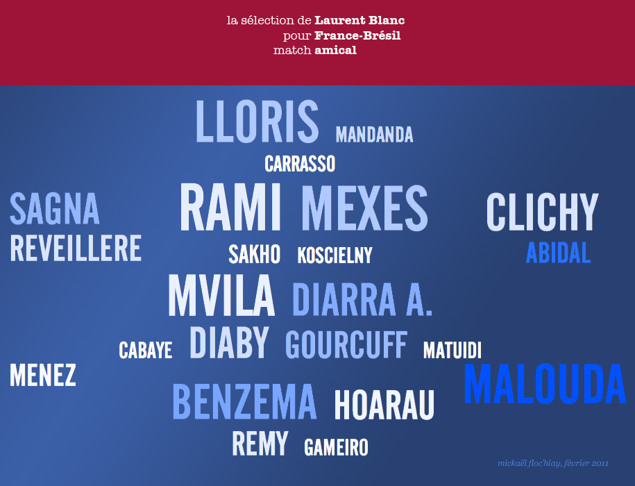
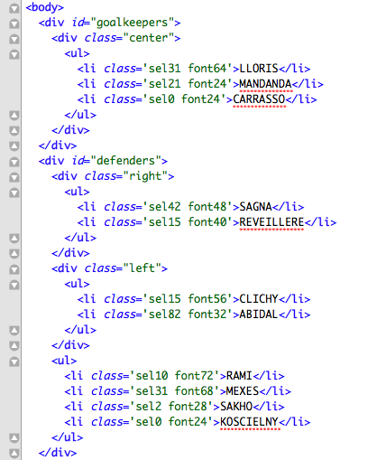

Troisième TP d'Information Design
Quelques mois après mon dernier exercice, je profite du match France-Brésil pour un nouveau TP.
Lors de l’exercice précédent, j’avais fabriqué une infographie de l’équipe de France à la main : à partir de mes données, j’avais ouvert mon Photoshop et fait le placement des joueurs à la main.
C’est joli mais ça manque d’intéraction possible. Aussi, le sujet de mon nouveau TP était : puis-je faire la même chose en HTML ?
Le HTML présente de nombreux avantages :
- on peut y insérer du web sémantique
- on peut y ajouter de l’interactivité
Aujourd’hui, je me suis principalement intéressé au web sémantique. Le résultat est le suivant (screenshot de Flickr) :

Moins joli, mais prometteur, je l’améliorerai d’un point de vue design et intéractivité lors du prochain match de l’équipe de France !
Je ne partage pas encore le HTML, car il n’est pas d’assez bonne qualité pour le moment, mais voici un screenshot du code source, afin de vous donner une idée du web sémantique que j’y ai introduit (là aussi, il peut être largement améliorée) :

Pour rappel de l’historique de la chose :